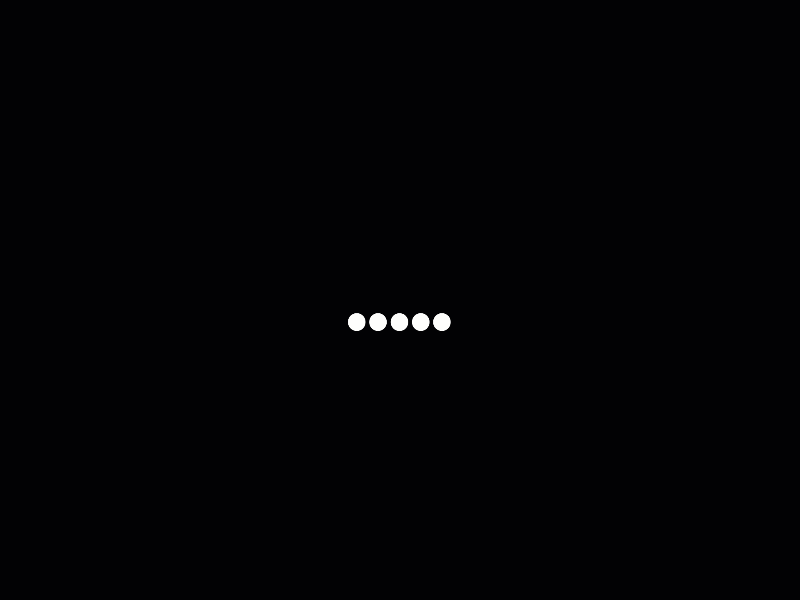
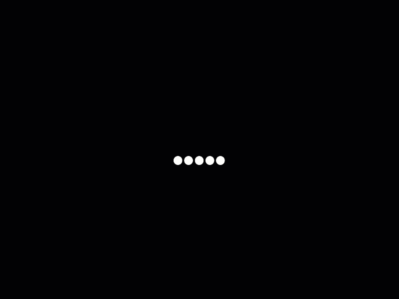

Profil
Aplikasi Web Sekawan FC
Selamat datang di aplikasi web resmi komunitas sepak bola Sekawan FC, sebuah platform yang dirancang untuk memfasilitasi semua anggota dalam berkomunikasi, berkolaborasi, dan menikmati manfaat penuh dari komunitas sepak bola. Sekawan FC bukan hanya klub sepak bola biasa, tetapi lebih dari itu, Sekawan FC adalah tempat di mana semangat olahraga bersatu dengan nilai-nilai persahabatan, kesehatan, dan harmoni sosial. Kami sangat bangga dengan apa yang telah kami capai, dan melalui aplikasi ini, kami berkomitmen untuk membawa pengalaman berkomunitas ke tingkat yang lebih tinggi.
Visi kami adalah menjadi komunitas sepak bola yang tidak hanya berfokus pada kemenangan di lapangan, tetapi juga pada pembangunan komunitas yang sehat, harmonis, dan inklusif. Sepak bola, bagi kami, lebih dari sekadar permainan. Kami melihatnya sebagai cara untuk membangun koneksi yang lebih dalam di antara para anggota. Kami percaya bahwa dengan mempromosikan gaya hidup sehat dan kebersamaan sosial, kami bisa memberikan kontribusi positif kepada masyarakat luas. Setiap anggota Sekawan FC, dari pemain hingga pendukung, adalah bagian penting dari misi kami untuk menjadikan olahraga sebagai alat untuk meningkatkan kualitas hidup. Kami ingin memastikan bahwa semua orang, tanpa memandang usia, latar belakang, atau kemampuan, dapat merasakan semangat dan kegembiraan yang dibawa oleh sepak bola.
Misi kami adalah:
- Mendorong anggota untuk aktif secara fisik dan menjaga kesehatan. Sepak bola adalah salah satu cara terbaik untuk menjaga kebugaran fisik, dan melalui latihan rutin dan pertandingan persahabatan/sparring, kami membantu anggota kami tetap sehat dan bugar.
- Membangun rasa persaudaraan dan kerukunan melalui kegiatan-kegiatan yang melibatkan semua anggota. Kami sering mengadakan acara turnamen kecil, dan kegiatan lainnya yang tidak hanya mengandalkan keterampilan sepak bola, tetapi juga mendorong interaksi sosial yang positif di antara anggota.
- Menyediakan platform yang memungkinkan anggota untuk berbagi pengetahuan dan keterampilan. Dalam komunitas kami, pengalaman dan pengetahuan setiap individu sangat dihargai. Melalui forum diskusi kami mendorong anggota untuk berbagi apa yang mereka ketahui dengan yang lain, baik itu tentang taktik sepak bola, pelatihan fisik, atau tips kesehatan.
- Menggunakan teknologi untuk memperkuat komunikasi dan interaksi antar anggota. Aplikasi web ini adalah langkah kami untuk lebih terhubung. Melalui fitur jadwal pertandingan yang terintegrasi, serta kemampuan untuk berkomunikasi dengan mudah, kami ingin memastikan bahwa semua anggota dapat tetap up-to-date dengan perkembangan terbaru di Sekawan FC.
Aplikasi web Sekawan FC dirancang untuk memberikan kemudahan kepada semua anggota dalam mengakses informasi terkini mengenai kegiatan, jadwal pertandingan, hasil pertandingan, serta berita-berita penting lainnya. Dengan teknologi yang terus berkembang, kami percaya bahwa komunitas kami juga harus berkembang dan memanfaatkan teknologi ini untuk mempermudah segala aspek operasional dan kegiatan.
Melalui aplikasi ini, setiap anggota dapat mendaftar untuk berbagai acara, baik itu Latihan maupun turnamen. Kami berkomitmen untuk menjadikan aplikasi ini sebagai platform yang ramah pengguna, mudah diakses, dan selalu diperbarui. Dengan begitu, semua anggota bisa merasa terlibat dan mendapatkan informasi yang mereka butuhkan tepat waktu.
Fungsi dari aplikasi web Sekawan FC:
- Kemudahan akses: Aplikasi web ini dapat diakses kapan saja dan di mana saja, baik dari komputer desktop maupun perangkat mobile. Hal ini memudahkan anggota untuk tetap terhubung dengan komunitas kapan pun mereka membutuhkannya.
- Informasi real-time: Dengan fitur pembaruan otomatis, anggota dapat memperoleh informasi terkini mengenai jadwal latihan, pertandingan, dan acara komunitas lainnya secara real-time. Tidak perlu lagi khawatir tentang melewatkan informasi penting.
Komunitas sepak bola yang inklusif dan ramah:
Di Sekawan FC, kami menempatkan nilai inklusivitas di garis depan. Kami bangga menjadi komunitas yang terbuka bagi semua orang, tanpa memandang latar belakang, usia, atau tingkat keterampilan. Bagi kami, sepak bola adalah permainan universal yang bisa dinikmati oleh siapa saja, dan kami berusaha keras untuk menciptakan lingkungan yang ramah di mana setiap orang merasa diterima.
Melalui berbagai program pengembangan, Sekawan FC memberikan kesempatan kepada anggota dari berbagai tingkat keterampilan untuk terus belajar dan meningkatkan kemampuan mereka. Kami menyediakan sesuatu untuk setiap anggota, memastikan bahwa setiap orang mendapatkan manfaat dari menjadi bagian dari komunitas ini.
Kami berharap dengan adanya aplikasi web Sekawan FC, semua anggota akan merasakan manfaat dari sistem yang lebih efisien dan modern. Kami terus berkomitmen untuk memperbarui fitur-fitur kami agar sesuai dengan kebutuhan Keluarga Besar Sekawan FC yang terus berkembang. Teknologi akan terus berubah, dan kami berjanji untuk tetap up-to-date dengan inovasi terbaru untuk memberikan pengalaman terbaik kepada setiap anggota.
Kami ingin mengundang Anda semua untuk menjelajahi aplikasi ini, menggunakan semua fitur yang telah kami sediakan, dan bergabung dengan kami dalam membangun komunitas sepak bola yang lebih kuat, lebih sehat, dan lebih harmonis. Bersama-sama, kita bisa membawa Sekawan FC ke tingkat yang lebih tinggi, tidak hanya di lapangan, tetapi juga di hati setiap anggota yang bergabung dengan komunitas ini.